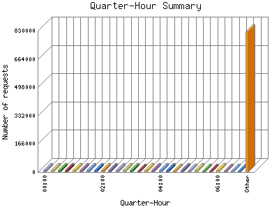

Analog 5.24
Analog 5.24 Report Magic for Analog 2.13
Report Magic for Analog 2.13The Quarter-Hour Summary shows an overview of site activity over the course of a day, broken down into fifteen-minute intervals. If your report has enough traffic this will give you a detailed graph of your site's load throughout the day.

| Quarter-Hour | Number of requests | Percentage of the requests | |
|---|---|---|---|
| 1. | 00:00 | 10,826 | 0.97% |
| 2. | 00:15 | 10,877 | 0.98% |
| 3. | 00:30 | 10,893 | 0.98% |
| 4. | 00:45 | 10,988 | 0.99% |
| 5. | 01:00 | 10,695 | 0.96% |
| 6. | 01:15 | 10,781 | 0.97% |
| 7. | 01:30 | 10,873 | 0.98% |
| 8. | 01:45 | 10,595 | 0.94% |
| 9. | 02:00 | 10,326 | 0.92% |
| 10. | 02:15 | 11,286 | 1% |
| 11. | 02:30 | 11,181 | 0.100% |
| 12. | 02:45 | 10,885 | 0.98% |
| 13. | 03:00 | 10,628 | 0.94% |
| 14. | 03:15 | 10,032 | 0.90% |
| 15. | 03:30 | 10,480 | 0.93% |
| 16. | 03:45 | 12,623 | 1.12% |
| 17. | 04:00 | 10,503 | 0.93% |
| 18. | 04:15 | 11,106 | 0.100% |
| 19. | 04:30 | 9,852 | 0.88% |
| 20. | 04:45 | 10,297 | 0.91% |
| 21. | 05:00 | 9,574 | 0.86% |
| 22. | 05:15 | 10,417 | 0.93% |
| 23. | 05:30 | 10,118 | 0.90% |
| 24. | 05:45 | 9,658 | 0.87% |
| 25. | 06:00 | 10,517 | 0.93% |
| 26. | 06:15 | 9,769 | 0.88% |
| 27. | 06:30 | 9,704 | 0.87% |
| 28. | 06:45 | 8,925 | 0.80% |
| 29. | 07:00 | 9,444 | 0.84% |
| 30. | 07:15 | 9,971 | 0.90% |
| 31. | 07:30 | 9,989 | 0.90% |
| 32. | 07:45 | 8,898 | 0.80% |
| 33. | 08:00 | 9,452 | 0.84% |
| 34. | 08:15 | 9,167 | 0.81% |
| 35. | 08:30 | 9,704 | 0.87% |
| 36. | 08:45 | 8,615 | 0.77% |
| 37. | 09:00 | 8,887 | 0.80% |
| 38. | 09:15 | 8,887 | 0.80% |
| 39. | 09:30 | 8,938 | 0.80% |
| 40. | 09:45 | 8,651 | 0.78% |
| 41. | 10:00 | 8,685 | 0.78% |
| 42. | 10:15 | 8,694 | 0.78% |
| 43. | 10:30 | 8,770 | 0.79% |
| 44. | 10:45 | 10,189 | 0.90% |
| 45. | 11:00 | 10,927 | 0.98% |
| 46. | 11:15 | 9,513 | 0.84% |
| 47. | 11:30 | 9,660 | 0.87% |
| 48. | 11:45 | 9,687 | 0.87% |
| 49. | 12:00 | 10,786 | 0.97% |
| 50. | 12:15 | 9,355 | 0.83% |
| 51. | 12:30 | 9,455 | 0.84% |
| 52. | 12:45 | 9,822 | 0.88% |
| 53. | 13:00 | 10,284 | 0.91% |
| 54. | 13:15 | 10,281 | 0.91% |
| 55. | 13:30 | 10,982 | 0.99% |
| 56. | 13:45 | 10,477 | 0.93% |
| 57. | 14:00 | 11,726 | 1.4% |
| 58. | 14:15 | 12,555 | 1.12% |
| 59. | 14:30 | 12,610 | 1.12% |
| 60. | 14:45 | 12,576 | 1.12% |
| 61. | 15:00 | 13,459 | 1.20% |
| 62. | 15:15 | 13,165 | 1.18% |
| 63. | 15:30 | 14,266 | 1.28% |
| 64. | 15:45 | 14,344 | 1.29% |
| 65. | 16:00 | 15,074 | 1.34% |
| 66. | 16:15 | 14,674 | 1.30% |
| 67. | 16:30 | 14,971 | 1.33% |
| 68. | 16:45 | 15,290 | 1.37% |
| 69. | 17:00 | 15,241 | 1.37% |
| 70. | 17:15 | 14,993 | 1.33% |
| 71. | 17:30 | 15,361 | 1.38% |
| 72. | 17:45 | 14,911 | 1.33% |
| 73. | 18:00 | 14,928 | 1.33% |
| 74. | 18:15 | 15,217 | 1.36% |
| 75. | 18:30 | 15,272 | 1.37% |
| 76. | 18:45 | 15,311 | 1.37% |
| 77. | 19:00 | 16,146 | 1.44% |
| 78. | 19:15 | 14,418 | 1.29% |
| 79. | 19:30 | 14,780 | 1.31% |
| 80. | 19:45 | 14,724 | 1.31% |
| 81. | 20:00 | 15,063 | 1.34% |
| 82. | 20:15 | 14,667 | 1.30% |
| 83. | 20:30 | 14,076 | 1.26% |
| 84. | 20:45 | 14,765 | 1.31% |
| 85. | 21:00 | 14,815 | 1.32% |
| 86. | 21:15 | 13,615 | 1.21% |
| 87. | 21:30 | 13,227 | 1.19% |
| 88. | 21:45 | 13,539 | 1.20% |
| 89. | 22:00 | 12,699 | 1.13% |
| 90. | 22:15 | 12,918 | 1.16% |
| 91. | 22:30 | 12,578 | 1.12% |
| 92. | 22:45 | 12,289 | 1.10% |
| 93. | 23:00 | 12,682 | 1.13% |
| 94. | 23:15 | 12,930 | 1.16% |
| 95. | 23:30 | 11,352 | 1.1% |
| 96. | 23:45 | 10,887 | 0.98% |
This report was generated on April 2, 2023 05:51.
Report time frame December 18, 2007 17:05 to March 31, 2023 23:21.
| Web statistics report produced by: | |
| Analog 5.24 | Report Magic for Analog 2.13 |